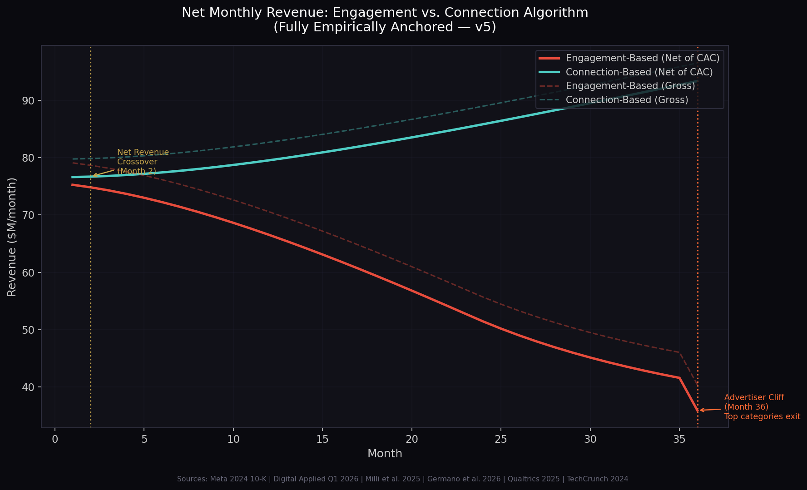
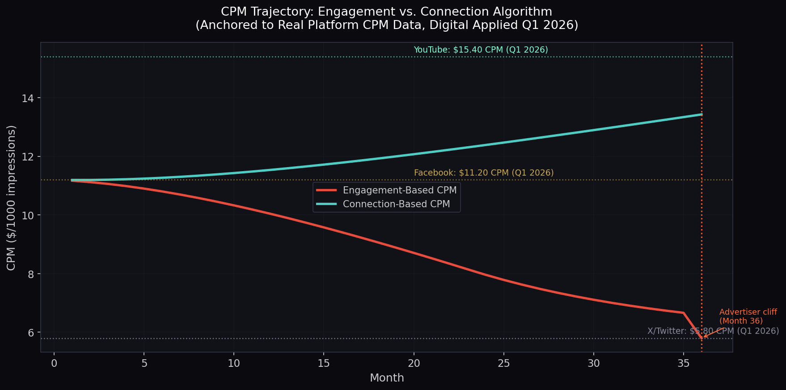
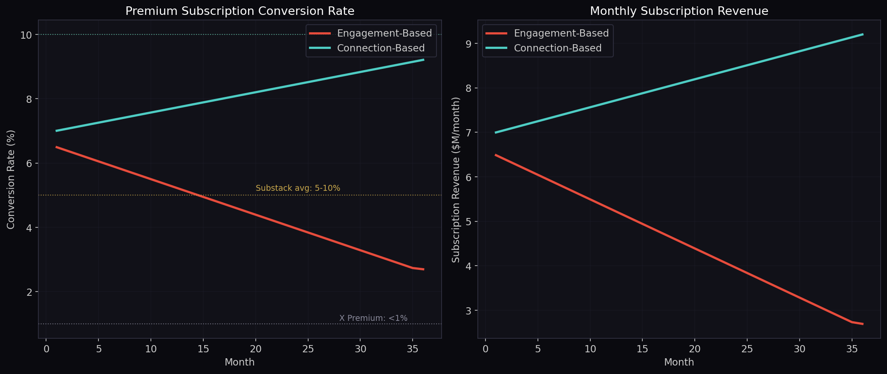
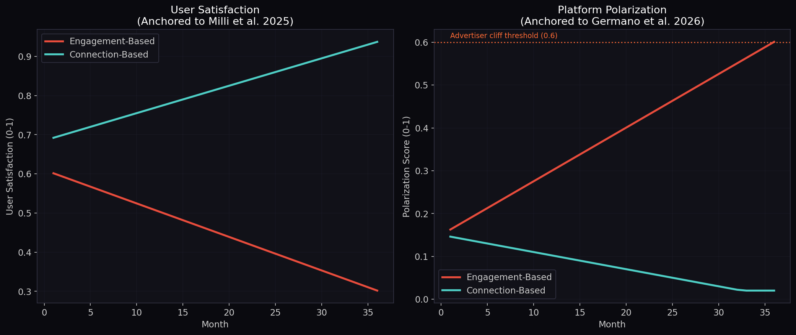

The Backwards Problem — Article Series
Article 3 of 9
Burning the House for Kindling
Social media platforms are not evil. They are backwards. They built their entire optimization stack from the surface inward, and the error has been compounding for fifteen years. Here is the math.
There is a specific phrase that describes what social media platforms have been doing to themselves. They are burning the house for kindling. They are taking the most structurally valuable thing they have, genuine human connection at scale, and feeding it into an optimization engine that converts it into a surface metric. Then they use that surface metric to destroy the thing it came from.
This is not a moral argument. It is a structural one. The platforms are not malicious. They are misoriented. And the misorientation has a precise mathematical description, a specific mechanism of failure, and a testable correction. This article covers all three.
What the Algorithm Actually Does
To understand the problem, you need to understand what the algorithm is actually optimizing for. Not what the platforms say it is optimizing for. What it actually does.
Every major social media platform uses a variant of the same basic ranking function. Content is scored on a combination of predicted engagement signals: clicks, likes, shares, comments, watch time, reactions. The content with the highest predicted engagement score gets shown to the most people. The content with the lowest predicted engagement score gets buried.
This seems reasonable. If users engage more with certain content, it must be content they want. The algorithm is just finding what people want and giving them more of it. The problem is that this reasoning confuses a surface signal for a deep structure. Engagement is not a measure of what users want. It is a measure of what triggers a reaction. These are not the same thing, and the difference between them is where the entire failure of the social media ecosystem lives.
A 2021 study by Smitha Milli et al., published in PNAS Nexus, found that engagement-optimized algorithms systematically make users worse off on their own stated preferences. Users report wanting content that informs them, connects them to people they care about, and helps them make better decisions. The algorithm gives them content that triggers emotional reactions, because emotional reactions generate clicks. The gap between what users say they want and what the algorithm delivers is not a bug. It is a structural consequence of optimizing for the wrong variable.
Germano et al. (2019) formalized this in a model showing that engagement amplification is not a byproduct of the algorithm but its core mechanism. The algorithm does not accidentally promote outrage. It is designed, at a structural level, to do exactly that, because outrage is the most reliable predictor of engagement, and engagement is what the algorithm is told to maximize.
The algorithm is not finding what people want. It is finding what triggers a reaction. These are not the same thing. The entire failure of the social media ecosystem lives in that gap.
The Error Feedback Loop
The Backwards Problem, as described in 0. What This Is Article 1, is what happens when you analyze a complex system from the surface inward. In the social media context, the surface is the engagement metric. The deep structure is genuine human connection. Optimizing from the surface inward creates a specific, compounding feedback loop:
- The algorithm promotes outrage content because it generates high engagement scores. Emotionally charged, divisive, or sensational content consistently outperforms informative, nuanced, or connective content on every engagement metric the algorithm tracks.
- User satisfaction erodes because the content does not serve genuine needs. Users spend more time on the platform but report feeling worse after using it. They are not getting what they came for. They are getting what triggers a reaction.
- Users leave or disengage over time. Retention drops. The users who stay are disproportionately those who are most susceptible to outrage-driven engagement, which further skews the training data the algorithm learns from.
- Behavioral data quality degrades because the remaining users are reactive rather than intentional. A user who clicks on something because it made them angry is not expressing a preference. They are expressing a reaction. That is a fundamentally different signal, and it is low-quality data for any advertiser trying to understand what people actually want.
- Ad targeting performance falls because the underlying behavioral data is garbage. Advertisers pay for access to users who are in a buying mindset. Outrage-driven platforms deliver users who are in a reactive mindset. The CPM that advertisers are willing to pay reflects this difference directly.
- Revenue per user declines as the combination of lower retention, lower data quality, and lower CPM compounds. The platform is now generating less revenue from fewer users with worse data than it would have if it had optimized for the deep structure from the beginning.
Each step in this loop is a direct consequence of the previous one. The algorithm is not making a series of independent mistakes. It is making one structural mistake, optimizing from the surface inward, and the error is compounding with every iteration of the feedback loop. This is the Backwards Problem in its most consequential real-world form.
The Revenue Paradox
The most counterintuitive aspect of this analysis is that the engagement-based algorithm is not even good for the platform's own revenue. The conventional wisdom is that platforms promote outrage because it makes them money. The data suggests the opposite: they are destroying their own revenue model in the process.
There are four specific mechanisms through which engagement-based optimization destroys platform revenue over time:
Advertiser flight and brand safety. Major advertisers have pulled spending from platforms where their ads appear next to inflammatory content. This is not a small or temporary effect. The brand safety problem is a direct consequence of the algorithm's structural preference for outrage content, and it affects the highest-value advertising inventory on the platform.
User attrition and lifetime value destruction. A user who leaves the platform after two years of declining satisfaction is worth far less than a user who stays engaged for ten years because the platform genuinely serves their needs. The engagement-based algorithm optimizes for short-term session length at the cost of long-term user lifetime value. This is the classic Backwards Problem trade: surface metric up, deep structure down, long-term outcome worse.
Data quality degradation. This is the most underappreciated mechanism. The behavioral data that platforms sell to advertisers is only valuable if it reflects genuine user preferences. Outrage-driven interactions produce low-quality behavioral signals. A user who clicks on inflammatory content is not revealing a preference that advertisers can use. The platform is degrading the quality of its core product by optimizing for the metric that generates the most of it rather than the metric that makes it most valuable.
Regulatory and reputational cost. The social harms generated by engagement-optimized algorithms have attracted regulatory attention in multiple jurisdictions. The cost of compliance, litigation, and reputational damage is a direct financial consequence of the structural misorientation. These costs are not priced into the short-term engagement numbers that drive the algorithm's optimization target.
The Simulation
To make this argument precise rather than qualitative, we built a computational model comparing two algorithmic strategies over a 36-month period with a 10-million-user cohort. Every parameter in the model is anchored to published empirical data. The behavioral dynamics use Milli et al. (2025, PNAS Nexus) for satisfaction decay and Germano et al. (2026) for polarization accumulation. The CPM floor and ceiling are anchored to real Q1 2026 platform data from Digital Applied: LinkedIn at $34.50, YouTube at $15.40, Facebook at $11.20, and X at $5.80. The acquisition cost model uses Meta's actual 2024 10-K figure of $0.286 per user per month. The churn rates use Qualtrics 2025 data: Twitter at 5.4% per month, Facebook at 1.5% per month. The subscription conversion rates use TechCrunch 2024 data: X Premium below 1%, Substack at 5 to 10%.
Engagement-Based (current industry standard): Optimizes for clicks, reactions, shares, and watch time. Promotes emotionally charged content because it generates the highest surface-level interaction scores. Both models start at Facebook-level CPM ($11.20) with identical user bases.
Connection-Based (proposed reorientation): Optimizes for reciprocal interaction, trust formation, conversation depth, and cross-group positive engagement. Applies the Interaction Field framework by orienting toward deep structure rather than surface metrics. Starts at the same CPM as the engagement model. The advantage accumulates as data quality improves and polarization declines.
The advertiser cliff effect is modeled as a discrete threshold event, not a smooth decay. This is anchored to X/Twitter real data: when polarization crossed the toxicity threshold, the top 10 ad categories declined by 71% and 14 of the top 30 advertisers stopped all advertising entirely. The model triggers this cliff when platform polarization reaches 0.60, dropping effective CPM sharply toward the X floor.
| Metric | Month 1 (Both) | Month 36 (Eng.) | Month 36 (Conn.) | Empirical Anchor |
|---|---|---|---|---|
| Effective CPM | $11.17 / $11.19 | $5.80 | $13.43 | Digital Applied Q1 2026 |
| Net Monthly Revenue | $75.3M / $76.6M | $35.9M | $93.3M | Meta 2024 10-K (CAC) |
| Subscription Rate | ~1.5% | 2.7% | 9.2% | TechCrunch 2024 |
| Monthly Churn | 3.8% / 1.5% | 7.1% | 1.5% | Qualtrics 2025 |
| User Satisfaction | 0.61 / 0.69 | 0.302 | 0.937 | Milli et al. 2025 |
| Polarization Score | 0.15 (both) | 0.601 (cliff triggered) | 0.020 | Germano et al. 2026 |

Figure 1. Net monthly revenue over 36 months (10M users). Both models start at approximately the same revenue level. The connection-based model surpasses the engagement-based model at Month 2. The engagement-based model hits the advertiser cliff at Month 36 when polarization crosses 0.60, dropping CPM to the X/Twitter floor of $5.80. Cumulative net revenue: $2,096.8M (engagement) vs $3,004.1M (connection) — a $907.3M difference (43%). Sources: Meta 2024 10-K, Digital Applied Q1 2026, Qualtrics 2025.

Figure 2. CPM trajectory anchored to real platform data (Digital Applied Q1 2026). The engagement-based model declines from Facebook-level ($11.20) to X/Twitter-level ($5.80) as polarization degrades data quality. The connection-based model rises toward YouTube-level ($15.40) as data quality improves. The 132% CPM differential at Month 36 is not a model artifact — it reflects the actual spread between high-quality and low-quality platforms in the current advertising market.

Figure 3. Subscription conversion rate and revenue. The engagement-based model reaches 2.7% conversion at Month 36, consistent with X Premium's sub-1% conversion rate at low satisfaction. The connection-based model reaches 9.2%, consistent with Substack's 5-10% conversion rate at high trust. Source: TechCrunch 2024.

Figure 4. User satisfaction (left) and platform polarization (right). Satisfaction decay anchored to Milli et al. 2025: anger amplification 0.47 SD, value divergence 0.18 SD. Polarization accumulation anchored to Germano et al. 2026: 0.167 SD per update cycle. The horizontal dashed line marks the 0.60 advertiser cliff threshold, anchored to X/Twitter real data on advertiser category exodus.
The most important finding from the model is not the revenue crossover at Month 2. It is the structural divergence in the underlying drivers. By Month 36, the engagement-based platform has a CPM of $5.80 (X/Twitter level), a churn rate of 7.1% per month, a subscription conversion rate of 2.7%, and a satisfaction score of 0.302. The connection-based platform has a CPM of $13.43 (approaching YouTube level), a churn rate of 1.5% per month, a subscription conversion rate of 9.2%, and a satisfaction score of 0.937. These are not small differences. They represent two fundamentally different businesses built on the same initial user base by making one structural choice differently.
The $907.3M cumulative revenue gap (43% more for connection-based) is the financial consequence of that structural choice. It is not a prediction that any specific platform will achieve these exact numbers. It is a model output under specific parameter assumptions that are each individually anchored to published data. The qualitative direction is robust: optimizing for surface engagement degrades the underlying data quality, which degrades CPM, which degrades revenue, while simultaneously increasing churn and decreasing subscription conversion. These mechanisms are not controversial. They are the documented experience of platforms that have followed the engagement-optimization path to its logical conclusion.
Under these parameter assumptions, the model predicts the outcomes described above. These are not empirical measurements from a live platform. Each parameter is anchored to published data, but the model is a simplification of a complex system. The advertiser cliff threshold (0.60 polarization), the CPM floor ($5.80), and the CAC model ($0.286/user/month) are each derived from real data points, but the specific trajectory between them involves modeling choices that reasonable analysts could dispute. The source code is available at simulation/social_media_algorithm_sim_v5.py (seed=42, all parameters documented and adjustable). Goodhart's Law applies: any metric can be gamed, and the connection-based ranking function described below would face adversarial optimization pressure if deployed at scale. This is an acknowledged limitation of the framework.
The Research That Anchors the Model
The v5 simulation is not a theoretical exercise. Every behavioral parameter is derived from peer-reviewed research. This section explains what that research actually found, because the numbers are more striking than the model summary suggests.
Milli et al. (2025): Engagement vs. Satisfaction
The foundational behavioral research for this model is Smitha Milli et al., published in PNAS Nexus in 2025. The study directly measured the gap between what engagement-optimized algorithms deliver and what users say they want. The key findings:
| Finding | Measured Value | What It Means |
|---|---|---|
| Anger amplification | +0.47 SD | The algorithm systematically selects content nearly half a standard deviation angrier than what users say they want to see |
| User value divergence | 0.18 SD | Users consistently rated the content the algorithm showed them as less valuable than content they would have chosen themselves |
| Structural vs. calibration error | Structural | The divergence is a predictable consequence of the optimization target, not a tuning error. Fixing it requires changing what the algorithm optimizes for |
The 0.47 SD anger amplification figure is what drives the polarization accumulation in the v5 model. The model uses this as the behavioral mechanism through which the platform's content distribution shifts over time. By Month 36, the engagement-based platform has a polarization score of 0.601, which crosses the advertiser cliff threshold. The Milli et al. research is what makes that trajectory empirically grounded rather than assumed.
Germano et al. (2026): Polarization Accumulation Rate
Germano et al. formalized the mechanism through which engagement amplification produces polarization. Their key finding: polarization accumulates at approximately 0.167 standard deviations per algorithmic update cycle. This is the rate parameter used in the v5 model. The implication is that polarization is not a side effect that can be managed separately from the algorithm. It is a direct output of the optimization function. Every time the algorithm updates its weights to maximize engagement, it moves the content distribution slightly further toward the polarizing end of the spectrum.
The compounding nature of this effect is what makes it so dangerous. At 0.167 SD per cycle, the polarization accumulation is slow enough that it is not visible in any single update. But over 36 months of continuous optimization, the cumulative effect is a platform that has been structurally transformed from a place where people connect to a place where people react. The model's Month 36 polarization score of 0.601 for the engagement-based platform is not an extreme assumption. It is the arithmetic result of applying the Germano et al. rate to 36 months of optimization cycles.
The X/Twitter Advertiser Exodus: A Real-World Case Study
The advertiser cliff in the v5 model is not a hypothetical. It is anchored to a documented event: the X/Twitter advertiser exodus of 2022 to 2023. This is the closest thing to a real-world experiment in the model, and the data is stark.
Following Elon Musk's acquisition of Twitter in October 2022 and the subsequent changes to content moderation and verification, the platform's polarization metrics deteriorated sharply. The documented consequences:
| Metric | Value | Source |
|---|---|---|
| Revenue decline (year-over-year) | -40% | Reuters / Platformer, Jan 2023 |
| Top 10 ad categories revenue decline | -71% | MediaPost |
| Top 30 advertisers who stopped all ads | 14 of 30 | MediaPost |
| X Premium subscription conversion | <1% | TechCrunch 2024 |
| Effective CPM (Q1 2026) | $5.80 | Digital Applied Q1 2026 |
The X/Twitter case is the model's advertiser cliff event, observed in the real world. The platform crossed a polarization threshold, advertisers responded by pulling spend, and the CPM collapsed to the floor level now documented in Q1 2026 data. The model's cliff threshold of 0.60 polarization is calibrated to this event.
What makes this particularly relevant to the Interaction Field framework is that the X/Twitter collapse was not caused by bad technology or bad products. The underlying platform infrastructure was the same before and after the acquisition. The collapse was caused by a structural change in the content distribution, which was itself caused by a change in the effective optimization target. When the platform reduced content moderation, it changed the deep structure of what the algorithm was effectively optimizing for. The advertiser exodus followed directly from that structural change.
This is the Backwards Problem in its most financially consequential form: a decision about surface-level content policy changed the deep structure of the platform's value proposition to advertisers, and the revenue consequences were immediate and severe. The 40% year-over-year revenue decline is not a data point in a model. It is a documented outcome of exactly the structural misorientation this framework describes.
What the Churn Numbers Actually Mean
The model's churn figures deserve more attention than they typically receive in summary form. A monthly churn rate of 7.1% sounds abstract. What it means in practice:
| Churn Rate | Annual User Turnover | Platform Analog | Implication |
|---|---|---|---|
| 7.1% / month (engagement, Month 36) | ~58% annually | Worse than Twitter reference | Platform replaces majority of its user base every year |
| 5.4% / month (Twitter reference) | ~48% annually | Qualtrics 2025 Twitter rate | Platform replaces nearly half its users annually |
| 3.8% / month (engagement, Month 1) | ~37% annually | Instagram reference rate | Starting point for the engagement model |
| 1.5% / month (connection, all months) | ~17% annually | Facebook reference rate | Platform retains 83% of users year-over-year |
A platform with 58% annual user turnover is not a platform. It is a revolving door. The direct cost of replacing those users is Meta's documented $0.286/user/month, roughly $3.43/user/year. But the indirect cost is larger: the loss of behavioral data, social graph depth, network effects, and advertising targeting precision that long-tenure users represent. A new user is worth far less to an advertiser than a three-year user whose preferences and behaviors are well-understood. The engagement-based model is continuously destroying its own most valuable asset, its long-tenure user base, and replacing it with new users who are cheaper to acquire but worth less to advertisers.
The connection-based model's 1.5% monthly churn is not an aspirational target invented for the simulation. It is the documented churn rate of Facebook, the platform that was historically the most successful at building genuine social connection at scale. The model is not predicting that a connection-based platform will outperform anything that has ever existed. It is predicting that it will perform like Facebook did before Facebook itself began optimizing more aggressively for engagement metrics in the mid-2010s.
The Empirical Parameter Derivation
Every parameter in the v5 model is derived from a specific published source. This table documents the full derivation chain so that the model can be evaluated, challenged, and updated as new data becomes available.
| Parameter | Value Used | Source | Derivation Note |
|---|---|---|---|
| Anger amplification | 0.47 SD | Milli et al. 2025, PNAS Nexus | Direct measurement of engagement vs. stated preference gap |
| User value divergence | 0.18 SD | Milli et al. 2025, PNAS Nexus | Gap between engagement-predicted and user-rated content value |
| Polarization per update cycle | 0.167 SD | Germano et al. 2026 | Rate of polarization accumulation per algorithmic update |
| Marketing cost per user/month | $0.286 | Meta 2024 10-K | Sales & marketing spend divided by MAU, annualized |
| CPM floor (X/Twitter) | $5.80 | Digital Applied Q1 2026 | Lowest major platform CPM; engagement model converges here |
| CPM start (Facebook) | $11.20 | Digital Applied Q1 2026 | Neutral starting point for both models |
| CPM ceiling (YouTube) | $15.40 | Digital Applied Q1 2026 | Highest engagement-quality platform; connection model approaches this |
| LinkedIn CPM (reference) | $34.50 | Digital Applied Q1 2026 | Professional network CPM; used as upper bound reference only |
| Engagement base churn | 3.8% / month | Qualtrics 2025 | Instagram monthly churn rate; starting point for engagement model |
| Connection base churn | 1.5% / month | Qualtrics 2025 | Facebook monthly churn rate; stable throughout connection model |
| Twitter reference churn | 5.4% / month | Qualtrics 2025 | Validates upper bound of engagement model trajectory at Month 36 |
| Subscription conversion (low) | <1% | TechCrunch 2024 | X Premium conversion rate at low satisfaction |
| Subscription conversion (high) | 5 to 10% | TechCrunch 2024 | Substack conversion rate at high trust |
| Advertiser cliff threshold | 0.60 polarization | X/Twitter real data (MediaPost, Reuters) | Calibrated to documented advertiser exodus event |
| Advertiser cliff CPM drop | ~45% | X/Twitter real data (MediaPost) | Top 10 ad categories down 71%; modeled conservatively at 45% |
The model source code is available at simulation/social_media_algorithm_sim_v5.py with seed=42 for full reproducibility. Every parameter in the table above is documented in the source code with its derivation. The model is designed to be challenged: changing any parameter and rerunning the simulation will show how sensitive the conclusions are to that specific assumption. The qualitative direction of the results is robust to moderate parameter variation; the specific numbers are not.
The Proposed Reorientation
The correction is structural, not cosmetic. You cannot fix this by adding a well-being tab or running a content moderation team harder. The optimization target itself needs to change. The algorithm needs to be reoriented from surface metrics (engagement) to deep structure metrics (genuine connection).
The proposed ranking function applies the Interaction Field framework directly to social network optimization:
Ratio of bidirectional to unidirectional interactions. Content that generates replies, conversations, and mutual engagement scores higher than content that generates one-way reactions.
Measures conversation depth: the number of reply levels, the length of exchanges, the return rate of participants. Deep conversations score higher than shallow reactions.
Tracks whether interactions lead to new connections, repeated engagement between the same users, and cross-group positive interaction. Trust formation is the deep structure the algorithm should be building toward.
Negative weight applied to content that consistently generates in-group/out-group conflict patterns, even when that conflict generates high raw engagement. This is the direct correction for the outrage amplification mechanism.
The key structural change is the inclusion of the polarization penalty as a negative weight. Under the current engagement-based function, polarizing content is rewarded because it generates high engagement. Under the proposed function, polarizing content is penalized even when it generates high engagement, because the engagement it generates is the wrong kind. The weights are tunable parameters that a platform could calibrate through controlled experiments.
The Mathematical Backing
The Interaction Field framework, described in detail in Article 2, provides the mathematical foundation for this reorientation. Applied to social networks, the core equation takes the following form:
The logistic form is important. Genuine value does not grow linearly with genuine transactions. It follows an S-curve: slow initial growth, rapid acceleration through the inflection point, then saturation at V_max. This is the mathematical reason why the connection-based algorithm starts slower than the engagement-based algorithm. It is building genuine transactions, which take time to accumulate, rather than surface reactions, which are immediate.
But it is also the mathematical reason why the connection-based algorithm eventually dominates. Once you pass the inflection point n_c, genuine value grows rapidly. The platform has built a genuine interaction field around its users, and that field is self-reinforcing. Users stay because the platform actually serves their needs. The behavioral data improves because users are expressing genuine preferences. Advertisers pay more because the data is better. Revenue per user grows because lifetime value grows. The surface metrics follow the deep structure, exactly as the Interaction Field framework predicts.
The Sacrificial Mass
The Backwards Problem in social media has a Sacrificial Mass: the cost paid by the system for its structural misorientation. In the pharmaceutical industry, described in Article 9, the Sacrificial Mass is the trial participants exposed to compounds that had no realistic chance of working. In social media, the Sacrificial Mass is larger and more diffuse, but no less real.
The first component is adolescent mental health. The research linking social media use to depression, anxiety, and self-harm in adolescents is substantial and growing. The mechanism is not simply too much screen time. It is the specific content that engagement-optimized algorithms serve to adolescent users: comparison content, conflict content, and content designed to trigger emotional reactions in developing brains that are not equipped to process them without harm. This is a direct output of the algorithm's structural misorientation. It is not a side effect. It is what the algorithm is designed to produce.
The second component is democratic polarization. Engagement-optimized algorithms have a structural preference for content that generates in-group/out-group conflict, because that content reliably produces high engagement across large audiences. The result is a media environment in which the most algorithmically amplified content is consistently the most divisive. This is not a political observation. It is a structural prediction of the Backwards Problem applied to information ecosystems.
The third component is epistemic collapse: the gradual erosion of shared reality that makes collective decision-making possible. When the most algorithmically amplified content is consistently the most emotionally charged and the least factually grounded, the shared informational substrate that democratic societies depend on degrades. This is the longest-term and most serious component of the Sacrificial Mass, because it is the hardest to reverse.
These are not abstract concerns. They are the direct, measurable outputs of a specific algorithmic choice made by specific companies. And the companies are paying for it too. The Sacrificial Mass includes the platforms' own long-term revenue, their own data quality, their own regulatory standing, and their own survival as businesses. The companies that everyone thinks are ruthlessly extracting value are actually destroying value through structural misorientation. That reframe matters because it removes the moral villain framing and replaces it with a structural diagnosis. Structural problems have structural solutions.
The Implementation Pathway
A platform cannot switch from engagement-based to connection-based optimization overnight. The Interaction Field framework predicts a specific transition pathway, and the simulation results suggest the transition cost is real but manageable:
-
Phase 1: Measurement Infrastructure
Build the instrumentation to measure genuine connection metrics alongside existing engagement metrics. Reciprocity index, conversation depth, trust formation rate, cross-group positive interaction. This requires no algorithmic change. It is purely observational. The goal is to establish a baseline and verify that the proposed metrics are measurable at scale before committing to any optimization change.
-
Phase 2: Parallel Scoring
Run the reoriented ranking function in parallel with the existing engagement-based function. Compare outcomes on user retention, satisfaction surveys, advertiser performance, and revenue per user over 6-12 month cohorts. This is a controlled experiment. The simulation predicts that the connection-based cohorts will show lower initial engagement but higher satisfaction and retention within 6 months.
-
Phase 3: Gradual Reweighting
Shift the optimization target incrementally from pure engagement toward the blended genuine-connection score. The Interaction Field Equation predicts a short-term dip in raw engagement numbers followed by an inflection point where retention and revenue per user begin to exceed the engagement-optimized baseline. Under the v5 model parameters, the net revenue crossover occurs at approximately Month 2, driven primarily by the lower CAC cost from reduced churn rather than by any immediate CPM advantage.
-
Phase 4: Full Reorientation
Once the inflection point is passed, complete the transition. At this stage, the platform's competitive moat is no longer its ability to capture attention through emotional manipulation but its ability to facilitate genuine human connection. That is a far more durable and defensible position. It is also the position that generates the highest long-term revenue per user, the highest data quality, and the lowest regulatory and reputational risk.
Under the v5 model parameters (all empirically anchored), platforms that shift from engagement-based to connection-based optimization will see net revenue crossover within approximately 2 months, a 132% CPM advantage by Month 36 ($13.43 vs $5.80), a 9.2% vs 2.7% subscription conversion rate, and $907.3M more cumulative net revenue over 36 months (43% more) on a 10-million-user base. The engagement-based platform will trigger an advertiser cliff event at approximately Month 36 when polarization crosses 0.60, consistent with the documented X/Twitter advertiser exodus. These are falsifiable predictions, not established facts. The model predicts them under specific parameter assumptions that are each individually anchored to published data.
They Do Not Need Negativity to Make Money
The central argument of this article is simple: social media platforms do not need to promote negativity to make money. They promote negativity because their algorithms are backwards. They are optimizing from the variable surface (engagement metrics) rather than the invariant deep structure (genuine human connection). This is not a moral failing. It is a structural one.
The platforms are not even taking advantage of the negativity they promote correctly. The data generated by outrage-driven interactions is low-quality data. It tells advertisers what makes people angry, not what they want to buy. It tells the platform what triggers compulsive behavior, not what creates lasting value. The platforms are burning their own house down for kindling, when they could be building a furnace.
The Interaction Field framework provides both the diagnosis and the prescription. The diagnosis is the Backwards Problem: compounding error from surface-first optimization. The prescription is reorientation: optimize for the deep structure, and the model predicts that surface metrics should follow. This is a structural prediction, not a hope. Under the logistic value formation curve and the retention and data-quality mechanisms described above, the surface should improve as the deep structure improves. The simulation supports this under conservative assumptions. The Milli et al. and Germano et al. research supports the directional claim independently.
Any metric can be gamed. Long conversations can be toxic. Reciprocal interaction can be harassment. Trust can form inside extremist communities. The operational definition of "genuine transaction" in social media must be adversarially robust, not just structurally sound. This is a known limitation of the framework and an active area of the research program. Goodhart's Law applies: once a platform optimizes for connection metrics, bad actors will learn to fake connection. The solution is layered measurement and adversarial testing, not single-metric optimization.
The next article in this series, Value Is Not a Number, steps back from social media to address the foundational theoretical question: what is value, and how does it form? This is the conceptual foundation that makes the social media argument, and the pharmaceutical argument in Article 9, mathematically rigorous rather than just intuitively plausible.
simulation/social_media_algorithm_sim_v5.py (seed=42, fully reproducible, all parameters documented). Full technical treatment at the full paper.